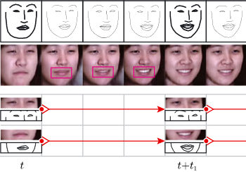
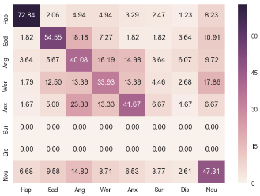

|
|
Graph-Relational Distributionally Robust Optimization
Fengchun Qiao and Xi Peng
NeurIPS Workshop on Distribution Shift, 2022.
|
|
|
Out-of-Domain Generalization from a Single Source: An Uncertainty Quantification Approach
Xi Peng, Fengchun Qiao, and Long Zhao
IEEE Transactions on Pattern Analysis and Machine Intelligence, 2022.
|
|
|
Uncertainty-guided Model Generalization to Unseen Domains
Fengchun Qiao and Xi Peng
In Proceedings of the IEEE Conference on Computer Vision and Pattern Recognition, 2021. (acceptance rate 23.4%)
|
|
|
Learning to Learn Single Domain Generalization
Fengchun Qiao, Long Zhao, and Xi Peng
In Proceedings of the IEEE Conference on Computer Vision and Pattern Recognition, 2020. (acceptance rate 22%)
|
|
|
Geometry-Contrastive GAN for Facial ExpressionTransfer
Fengchun Qiao, Naiming Yao, Zirui Jiao, Zhihao Li, Hui Chen, and Hongan Wang
arXiv,2018.
|
|

|
Emotional facial expression transfer from a single image via generative adversarial nets
Fengchun Qiao, Naiming Yao, Zirui Jiao, Zhihao Li, Hui Chen, and Hongan Wang.
The 31st International Conference on Computer Animation and Social Agents (CASA), 2018.
|
|

|
An Ensemble of VGG Net- works for Video-Based Facial Expression Recognition
Zirui Jiao, Fengchun Qiao, Naiming Yao, Zhihao Li, Hui Chen, and Hongan Wang.
The First Asian Conference on Affective Computing and Intelligent Interaction (ACII Asia), 2018.
|
- Applied Scientist Intern, Amazon Web Services AI Lab
Time: Summer 2021. Mentor: Dr. Gukyeong Kwon
Topics: A Probabilistic Model for Cross-Modal Retrieval.
- Research Assistant, Institute of Software, Chinese Academy of Sciences
Time: 2016 - 2019. Advisor: Prof. Hui Chen
Topics: GAN-based Facial Expression Synthesis.
|
- NeurIPS 2022 Top Reviewer Award, 2022
- Outstanding Graduate Student Award, University of Delaware, 2022
- Distinguished Graduate Student Award, University of Delaware, 2021
- National Scholarship for Graduate Students, 2018
- CIKM AnalytiCup 2017 (Ranking: 4/1395), 2017
- KDD CUP 2017 (Ranking: 16/3582), 2017
|
- Fall 2021: Teaching Assistant for CISC 484 (Machine Learning), CISC 621 (Algorithm Design and Analysis).
- Spring 2021: Teaching Assistant for CISC 484/684 (Machine Learning).
- Fall 2020: Teaching Assistant for CISC 481 (Artificial Intelligence), CISC 482 (Introduction to Human-Computer Interaction).
|
- Conference reviewer/Program committee: ICML 2022, NeurIPS 2022, AAAI 2023
- Journal reviewer: TIP/TMM/CVIU/TCSVT
|
|